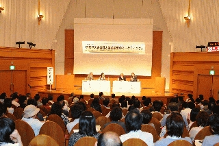

シンポジウム「医薬品の安全性と製薬企業のマーケティング」(デービッド・ヒーリー、デレリー・マンギン他）
2010-06-05

シンポジウム
「医薬品の安全性と製薬企業のマーケティング」
薬害オンブズパースン会議は、昨年９月、抗うつ剤パキシルが胎児に及ぼす危険性について添付文書の改訂などを求める要望書を、厚労大臣及びグラクソ・スミスクライン社に対して提出しました。パキシルの問題は、医薬品の安全性と製薬企業のマーケティングのあり方について本質的な問題を提起しています。
薬害防止に何が必要なのか？薬害肝炎検証再発防止委員会最終提言や、本年夏に結審を迎える薬害イレッサ訴訟も視野に入れながら、米国の訴訟でパキシルの危険性について証言した２名の医師を招き、議論します（同時通訳付き、事前申込みは不要）。
日 時 ２０１０年６月５日（土）１３時〜１７時
会 場 女性と仕事の未来館
ＪＲ田町駅徒歩３分、都営地下鉄三田駅徒歩１分
参加費 無料
＜プログラム＞
第１部 基調講演
パキシルへの転向−日本を、そして女性を−
デービッド・ヒーリー（英国）
ブロークン・ハート−妊娠中のＳＳＲＩ
デレリー・マンギン（ニュージーランド）
第２部 特別報告
日本における医薬品をめぐる現状
−薬害イレッサ事件− 関口 正人
−薬害肝炎検証再発防止委員会− 水口真寿美
第３部 パネルディスカッション
抗うつ剤ＳＳＲＩをめぐる諸問題と薬害防止
主 催 薬害オンブズパースン会議
薬害対策弁護士連絡会
医薬品・治療研究会（TIP正しい治療と薬の情報）
NPO法人医薬ビジランスセンター（薬のチェック）
※ シンポジウムは、２６０名の方々の参加を得て終了いたしました。ありがとうございました。
- 関連資料・リンク等
-
- チラシ（606 KB）
- デレリー・マンギン講演要旨（16 KB）
- デレリー・マンギン講演スライド（2847 KB）
- デービッド・ヒーリー講演要旨（13 KB）
- デービッド・ヒーリー講演スライド（1014 KB）
- 関口正人講演要旨（15 KB）
- 関口正人講演スライド（563 KB）
- 水口真寿美講演要旨（16 KB）
- 水口真寿美講演スライド（304 KB）
- 意見書（デービッド・ヒーリー・デレリー・マンギン）・当会議要望書など